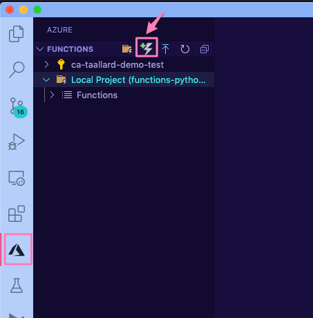

Completing the scenario¶
To finish the scenario we are going to do the following:
Create a new function that will have as trigger the Blob Storage file creation
Send automated emails with the URLs from the questions
Let’s go.
1. Create your new function¶
Creating a new function in an existing functions project is very similar to the process we followed in section Your first Azure function.
Inside the same VS Code workspace we have been using until now:
Click on the Azure extension on the sidebar.
In the Azure functions section click on the Create function icon.
Select the Azure Blob storage trigger and AzureWebJobsStorage.
Finally provide the blob path to be monitored:
functionblob/{name}.csv.
As before, I am going to rename the scriptFile to blob_manipulation.py.
Your new function.json file should look like this:
blob-manipulation/function.json¶{ "scriptFile": "blob_manipulation.py", "bindings": [ { "name": "myblob", "type": "blobTrigger", "direction": "in", "path": "functionblob/{name}.csv", "connection": "AzureWebJobsStorage" }, { "type": "sendGrid", "direction": "out", "name": "sendemail", "apiKey": "SendGridAPIKeyAsAppSetting" }, { "type": "blob", "direction": "out", "name": "outputBlob", "path": "functionblob/{name}_tag_plot.png", "connection": "AzureWebJobsStorage" } ] }
Note
Here we are filtering by file extension and path functionblob/{name}.csv.
 Additional resources and docs
Additional resources and docs